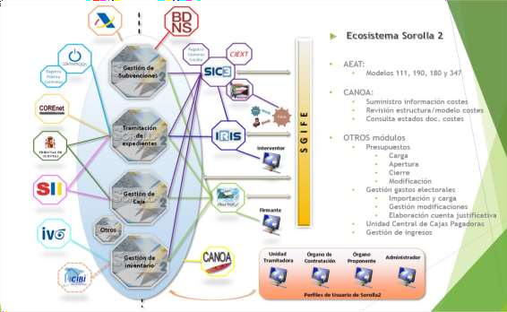

Gestión económica y presupuestaria
Ámbito de la gestión económica y presupuestaria¶
Situación actual.
SOROLLA2 está concebido como un sistema, complementario del sistema de información contable, orientado a la gestión económico-presupuestaria de los centros gestores y entidades públicas administrativas con presupuesto limitativo, para la tramitación de expedientes de gasto, la gestión y contabilidad de las cajas pagadoras, la generación de documentos administrativos y contables, la información sobre la ejecución presupuestaria, y la gestión del inventario de bienes de la entidad.
Durante ocho años se produjo la convivencia entre la primera generación de este sistema (SOROLLA), que data de 1998, y la actual (SOROLLA2), que cuenta con sus primeras entidades en producción a partir de 2011. Esta coexistencia se ha mantenido hasta 2018, ejercicio en el que las últimas entidades adheridas pendientes de evolucionar a SOROLLA2 ya lo hicieron, razón por la que la IGAE ha dejado de mantener el sistema SOROLLA.
Tanto la primera generación de este sistema (SOROLLA), a lo largo de los 20 años de vigencia de la misma, como la actual, han ido evolucionando continuamente para adaptarse a los cambios normativos; a la realidad de la gestión que se realiza en los centros gestores; a las nuevas tecnologías; y a las actualizaciones de los productos informáticos que utilizan. En el caso del primigenio SOROLLA se trataba de un sistema departamental desarrollado en los años 90 con arquitectura cliente-servidor que dio paso a partir de 2011 al actual SOROLLA2 como sistema centralizado bajo arquitectura web y tecnología java, concebido como solución SaaS (Software as a Service) para entidades públicas administrativas.
Este sistema ha sido adoptado por 239 centros gestores y organismos públicos administrativos, dando servicio a
31.106 usuarios, encontrándose referencias tan relevantes como todos los Ministerios, excepto el de Defensa, aunque no de forma integral en todos ellos, con organizaciones tan complejas como la Administración de Justicia; Instituciones Penitenciarias; D.G. Policía; y entidades como el Servicio Público de Empleo Estatal; Agencia Estatal de Meteorología; Instituto Nacional de Estadística; MUFACE; Jefatura Central de Tráfico; CSIC; ...
| ENTIDADES ADHERIDAS | SOROLLA2 Datos a 31-12-2024 |
|---|---|
| Centros gestores de la Administración General del Estado | 112 |
| Delegaciones de Economía y Hacienda | 52 |
| Organismos públicos estatales | 74 |
| Otras entidades | 1 |
| TOTAL | 239 |
Nota: En los Centros Gestores de la Administración General del Estado están incorporados cinco Órganos Constitucionales.
La actual generación del sistema (SOROLLA2) que se ha puesto a disposición de los centros gestores y entidades públicas administrativas aspira a seguir siendo la principal referencia en la Administración pública para esta década, en competencia con soluciones de mercado, para la tramitación de expedientes de gasto, la contabilidad de las cajas pagadoras, y la gestión del inventario, adaptada a los requerimientos y exigencias derivados de la Administración electrónica. Está en línea, además, con uno de los objetivos planteados en el informe CORA como es el impulso de soluciones horizontales en la Administración. De hecho, este sistema fue incluido en la Declaración de Servicios Compartidos aprobada por la Comisión de Estrategia de Tecnologías de la Información y las Comunicaciones celebrada el 15 de septiembre de 2015, de acuerdo con lo previsto en el artículo 10 del Real Decreto 806/2014, de 19 de septiembre, sobre organización e instrumentos operativos de las tecnologías de la información y las comunicaciones en la Administración General del Estado y sus Organismos Públicos.
SOROLLA2 adquirió mayor relevancia, y si cabe mayor intensidad de demanda, como consecuencia de la aprobación de la Ley 25/2013, de 27 de diciembre, de impulso de la factura electrónica y creación del registro contable de facturas en el sector público, y su normativa de desarrollo, por la utilización obligatoria de la factura electrónica establecida para el ámbito de aplicación de la ley, en los términos y condiciones previstos en la misma, a partir de
15 de enero de 2015, lo que obligaba a los centros gestores y unidades tramitadoras a disponer de un sistema de gestión capacitado para la tramitación electrónica de expedientes y facturas electrónicas. Esta demanda se intensificó posteriormente con la aprobación de las leyes 39/2015 y 40/2015, ambas de 1 de octubre, que consagran la tramitación electrónica como cauce habitual de las Administraciones públicas. Más recientemente la demanda de adhesión de entidades del sector público estatal a SOROLLA2 se ha visto acentuada por la aprobación de la Orden HAC/552/2019, de 11 de abril, por la que se modifican las órdenes de documentos contables y de aprobación de las Instrucciones de contabilidad, para la obligatoriedad de los documentos contables electrónicos.
Esta creciente demanda del sistema ha llevado, a partir de 2016, a establecer un nuevo marco de colaboración para la sostenibilidad financiera de los sistemas SOROLLA2 y CANOA, en relación con el soporte y desarrollo evolutivo de los mismos, instrumentado a través de convenios de la IGAE con las entidades adheridas, especialmente a raíz de la inclusión del sistema de gestión económico-presupuestaria SOROLLA2 en la declaración de servicios compartidos aprobada en la reunión de la Comisión de estrategia TIC celebrada el 15-09-2015.
Los ejes principales del actual sistema son los siguientes:
-
Arquitectura web con servicio centralizado de hospedaje en la IGAE.
-
Sistema integrado, orientado a la tramitación electrónica nativa de expedientes de gasto de pago directo, de pagos a justificar y de anticipos de caja fija.
-
Compromiso con la herencia de la primera generación del sistema (SOROLLA) en cuanto a la simplicidad del modelo, sin perjuicio de asumir importantes prestaciones funcionales adicionales.
-
Adaptación permanente a la normativa contable e incorporación de las prestaciones derivadas de la evolución
del sistema contable, garantizando la interoperabilidad con SIC’3.
- Orientación como sistema vertebrador y canalizador de los recursos asociados a la gestión económico- presupuestaria de las entidades públicas administrativas, para lo que trata de disponer de servicios de integración con los distintos sistemas del ecosistema del gestor.
El modelo organizativo de SOROLLA2 pivota en torno a los conceptos de órgano gestor y unidad tramitadora, admitiendo cinco tipos de unidades tramitadoras: cajas pagadoras, gestión de expedientes, gestión de inventario, ingresos y cajas pagadoras de gastos electorales, teniendo cada uno de estos tipos de unidades funcionalidades específicas dentro del sistema. Se contemplan además perfiles específicos como los de Unidad Central de Cajas Pagadoras, Comisionado, Órgano de Contratación y Órgano Proponente.
Sin perjuicio de la necesaria convergencia entre organización y sistema, SOROLLA2 está preparado para que cada unidad tramitadora pueda dar servicio a uno o a varios órganos gestores, y al propio tiempo para que cada órgano gestor pueda utilizar los servicios de varias unidades tramitadoras (por ejemplo, en función de la naturaleza del gasto), de forma que pueda responder a las necesidades tanto de pequeños organismos como de grandes ministerios, pasando por toda la escala de entidades, sin más que adaptar la configuración del sistema a la estructura organizativa de la entidad. Cada usuario del sistema puede tener acceso a uno o varios órganos gestores, así como a una o varias unidades tramitadoras, y de cualquier tipo.
El sistema SOROLLA2 responde a la siguiente estructura de módulos o prestaciones funcionales:

-
Aplicación para la tramitación de expedientes de gasto de contratación, subvenciones y gastos de personal.
-
Aplicación para la gestión y contabilidad de los cajeros pagadores, incluyendo la gestión de comisiones de servicio.
-
Aplicación para la gestión del inventario auxiliar de bienes muebles y de aquellos otros bienes y derechos cuya gestión corresponda a departamentos ministeriales u organismos públicos, de acuerdo con el art. 33 de la Ley 33/2003 de Patrimonio de las AA.PP., aplicación cuya integración en SOROLLA2 se produjo en 2013.
-
Aplicación de seguimiento de la ejecución presupuestaria y de generación de los documentos administrativos y contables electrónicos.
-
Módulos específicos para el perfil del órgano proponente y del órgano contratante. Adicionalmente en 2020 se desplegaron nuevas versiones del sistema que incorporan módulos específicos para la Unidad Central de Cajas, así como para la gestión de gastos electorales.
-
Integración con numerosos sistemas tanto internos a la propia IGAE como externos.
La firma electrónica de la documentación electrónica puede realizarse en SOROLLA2 utilizando los servicios del portafirmas electrónico corporativo (DocelWeb) que se describe en el apartado de servicios horizontales, así como a través de otros portafirmas de amplio espectro con los cuales se integra.
Destacar finalmente que el sistema se ha adecuado en estos últimos años a las necesidades particulares de las cajas pagadoras que operan en el exterior, y ha integrado las necesidades de gestión de los OPIs en materia de ingresos y de seguimiento de actividades científicas, todo ello merced al intenso proceso de colaboración que se ha producido con Oficinas Comerciales y con el CSIC respectivamente.
Objetivos y líneas de actuación.

Continúa la demanda de adhesión de entidades del sector público estatal al sistema de gestión económico- presupuestaria (SOROLLA2). En 2024 destacan los esfuerzos invertidos en aplicar la reorganización ministerial de gran envergadura producida en los últimos meses de 2023, y la finalización de la implantación completa de SOROLLA2 (gestión presupuestaria) en toda la red de oficinas comerciales del Ministerio de Economía, Comercio y
Empresa. En cuanto a SOROLLA2 (gestión del inventario) se ha procedido a su implantación en el Ministerio de Política Territorial y Memoria Democrática.
Para los ejercicios posteriores está prevista la implantación de SOROLLA2 (gestión presupuestaria) en la Comunidad Autónoma de Cantabria, comenzando en 2025 con el Servicio Cántabro de Empleo, y en el Centro de Investigaciones Energéticas, Medioambientales y Tecnológicas (CIEMAT). También está prevista la implantación en la Agencia Espacial Española y en la Dirección General de Estrategias de Movilidad del Ministerio de Transportes y Movilidad Sostenible. En el ámbito exterior, se iniciará la implantación en las Consejerías de los Ministerios de Trabajo e Inclusión, en las Oficinas de Comunicación del Ministerio de la Presidencia, y en las Consejerías del Ministerio para la Transición Ecológica y el Reto Demográfico. En cuanto a SOROLLA2 (gestión del inventario) se implantará, entre otros, en los ministerios que se prevean en la Resolución que apruebe a tal efecto la IGAE (Ministerio de Política Territorial y Memoria Democrática, Ministerio de Cultura, etc.) así como en el OEITSS, la CH del Tajo, la D.G. del Agua y resto de Confederaciones Hidrográficas, y si la prioridad asignada a los ministerios lo permitiera: Centro Universitario de la Policía Nacional, MUGEJU e IEF.
En el actual escenario de utilización de modalidad de teletrabajo está siendo fundamental el soporte a la tramitación electrónica de expedientes y documentos contables potenciando las posibilidades de la solución de bandeja de tramitación, para la gestión de documentos contables no integrados en un expediente y de otros supuestos específicos, así como el etiquetado manual y automático de documentos.
Particular interés tienen las actuaciones conducentes a la instrumentación de las medidas derivadas de las distintas comisiones constituidas en el seno del grupo de trabajo para la estrategia de avance digital de la IGAE (ESADI) para la transformación digital del ciclo de ejecución y control del gasto, en particular, respecto a la nueva documentación estructurada que se ha identificado y definido en estas comisiones y a las reglas de automatización de validaciones y decisiones que se han determinado. Aquí la prioridad se centra en continuar con la implementación de nuevos documentos administrativos estructurados y en su activación de manera efectiva, fundamentalmente a través de la colaboración con la Intervención Delegada en el Ministerio para la Transición Ecológica y el Reto Demográfico (CT1).
Continúan también las importantes actuaciones incardinadas en el plan de digitalización, financiadas a través del MRR, dirigidas a un sistema integral de contratación administrativa (iniciativa eProcurement) que, en lo que se refiere a SOROLLA2, incluye la incorporación de mejoras y prestaciones adicionales a través de 8 proyectos: 1) Nuevo módulo de planificación y seguimiento de la contratación; 2) Nuevo módulo de elaboración de la propuesta de presupuestos; 3) Nueva API REST; 4) Incorporación de la gestión de contratos en el módulo de Caja; 5) Tramitación de solicitudes de informe y otras comunicaciones vía intercambio de asientos registrales; 6) Tramitación de solicitudes de certificados a través de la PID; 7) Envío de comunicaciones y notificaciones electrónicas a través de Notific@; 8) Cuadro de Mando de Contratación (CMC). Este programa de proyectos se está articulando a través de una contratación específica cuya ejecución se inició en septiembre de 2023 y finalizará en octubre de 2025. Es previsible en todo caso que los trabajos en estos nuevos ámbitos se extiendan ampliamente más allá de este horizonte.
Sistema departamental para la gestión económico-presupuestaria y para la gestión del inventario de activos fijos de órganos gestores y entidades públicas administrativas (SOROLLA2).¶
Gestión del presupuesto y documentos contables.¶
Para el binomio 2025-2026 se prevén las siguientes actuaciones:
-
Seguimiento y soporte a los procesos de la reorganización administrativa que afecta 6 Ministerios y 2 agencias.
-
Seguimiento y soporte de los procedimientos de cierre y apertura del ejercicio en los Centros gestores y entidades adheridas.
-
Modificaciones y mejoras a incorporar en los procesos de cierre y apertura (informe de coherencia, validaciones, etc.)
-
(eProcurement) Nuevo módulo de elaboración de la propuesta de presupuestos.
-
Mejoras en la carga del nuevo presupuesto y el tratamiento de las vinculaciones en base a extracciones proporcionadas por los aplicativos del Sistema Presupuestario (Quanto y Adenda).
-
Revisión de la calidad del dato de terceros (baja lógica de terceros, etc.)
Gestión de expedientes.¶
Para el binomio 2025-2026 se prevén las siguientes actuaciones:
-
Mejoras en la interfaz de usuario de expedientes y refactorización de código al objeto de incrementar su usabilidad y mantenibilidad.
-
Revisión y mejora de la tramitación de expedientes correspondientes a encargos a medios propios personificados.
-
En Expedientes con contrato asociado, evolución de la tramitación de cara a continuar maximizando las posibilidades de integración con la PLACSP.
-
En Expedientes de Obras, adaptaciones necesarias para la nueva gestión de acopios según la Orden HAC/965/2024.
-
(eProcurement) Nuevo módulo de planificación y seguimiento de la contratación.
-
(eProcurement) Solución corporativa de BI para el análisis multidimensional y explotación de la información de SOROLLA2 por los centros gestores y entidades adheridas.
-
(eProcurement) Adaptaciones en la tramitación de expedientes de cara a dar respuesta a las necesidades planteadas por eProcurement.
-
En Subvenciones, nueva funcionalidad para que usuarios supervisores puedan realizar seguimiento completo y determinados ajustes de manera autónoma sobre sus expedientes.
-
(ESADI) Actuaciones de estructuración de documentos, validación automática y explotación de la información que deriven de los análisis del grupo de trabajo ESADI de la IGAE.
-
Evolución y refactorización de la funcionalidad actual de incorporación de documentos externos al expediente.
Gestión de cajas pagadoras.¶
Para el binomio 2025-2026 se prevén las siguientes actuaciones:
-
(ESADI) Análisis de las adaptaciones a realizar en el módulo de caja derivadas de las comisiones ESADI de Caja y de Comisiones de Servicio.
-
(eProcurement) Incorporación de la gestión de contratos en el módulo de Caja.
-
(eProcurement) Adaptaciones en la tramitación de Caja de cara a dar respuesta a las necesidades planteadas por eProcurement.
-
Adaptaciones en el tratamiento de los documentos contables de control de pagos a justificar de Presentación y Aprobación para alinearse con el nuevo comportamiento en SIC'3 derivado de la última Orden de Documentos Contables.
-
Adaptaciones a la nueva versión 2.0 de la Cuenta de gestión.
-
Adaptaciones derivadas del procedimiento excepcional de traspaso de fondos entre servicios del exterior regulado por Resolución de 22 de junio de 2022, de la Subsecretaría.
-
Adaptaciones adicionales en el módulo de Caja para la gestión de divisa de situación y moneda local.
Gestión del inventario.¶
Para el binomio 2025-2026 se prevén las siguientes actuaciones:
-
Mejoras a nivel de interfaz de usuario y de operativa en las pantallas de gestión de bienes.
-
Comunicación a Inventario vía buzón o correo de la fecha de Reconocimiento de la Obligación de la certificación final (en obras con el fin de identificar la entrada en condiciones de uso de una construcción)
-
Prueba y ajuste en su caso sobre las nuevas operaciones de rectificación de NCIS en ejercicio abierto para redistribución de importes sobre umbral en positivo y negativo (08001 y 08002)
-
Tratamientos derivados en su caso de la regularización de libramientos a justificar regulada en la Resolución IGAE de 16 de enero de 2025
-
Revisión de la actual funcionalidad opcional de iniciar los criterios de vida útil de los bienes en base a la fecha de contabilización del documento de reconocimiento de la obligación.
-
Mejoras para la coordinación entre SIC’3 y SOROLLA2 gestión del inventario a efectos del cierre.
-
Modificación de los informes de amortización detallados para ir por bienes, en vez de operaciones.
-
Revisión del informe de inmovilizado orientado al usuario contable, con una estructura de balance, para evaluar posibles adaptaciones a realizar.
-
Nueva versión del informe PBI de Preselección de bienes con datos de ubicación y mapa coroplético para facilitar la selección de bienes por provincia.
Gestión de ingresos.¶
Para el binomio 2025-2026 se prevén las siguientes actuaciones:
-
Soporte a CSIC en su proceso de cierre y apertura, incluyendo los centros nacionales.
-
Adecuación del núcleo de SOROLLA2 por la evolución de SOROLLA2+ en relación con el desarrollo de las nuevas prestaciones indicadas anteriormente.
-
Nuevas prestaciones en SOROLLA2 para atender las demandas que en su caso se acuerden con CSIC.
-
Establecimiento de un plan de incorporación del resto de OPI.
Integraciones sistémicas, tramitación electrónica y descargas.¶
Para el binomio 2025-2026 se prevén las siguientes actuaciones:
-
Nueva integración con CIEXT para efectuar reservas en CIEXT OOAA.
-
Nueva integración con SIC’3 de cara a la obtención de los certificados de estar al corriente de reintegros de
subvenciones y de préstamos.
-
Adaptación de la integración con DocelWeb para hacer uso de su API REST, y potencialmente de flujos de tramitación en caso de ofrecerse.
-
Adaptación del negocio de remisión de solicitudes de recepción a COREnet para adecuarse a los cambios normativos que se produzcan.
-
Implementación de una comunicación asíncrona con la BDNS.
-
Mantenimiento adaptativo de la integración con la PLACSP (perfilado CiP 2.1, NUTS-2024, etc.)
-
Puesta en funcionamiento de los servicios de interoperabilidad con la Central de Contratación del Estado (AUNA).
-
Utilización de los servicios web que ofrece el SII de la AEAT.
-
Utilización del servicio de verificación de NIF – razón social/nombre y apellidos de la AEAT.
-
(eProcurement) Nueva API REST con métodos de interés general para integradores, y mantenimiento y evolución de la misma para atender nuevas demandas de integración.
-
(eProcurement) Integración en el contexto de la tramitación a través de SOROLLA2 de diversas solicitudes de informes. Nueva funcionalidad de remisión y recepción de asientos registrales electrónicos.
-
(eProcurement) Integración con Notific@ a efectos de remisión de comunicaciones y notificaciones electrónicas a los interesados en el procedimiento.
-
(eProcurement, PADT) Utilización de la PID para la consulta y verificación de datos de identidad de personas físicas o jurídicas (con la AEAT) y para la obtención de certificados de estar al corriente de obligaciones tributarias y con la Seguridad Social.
-
Soporte a las integraciones existentes vía API con sistemas externos (MITMA, SGFE, OIP, CSIC, MININT) y gestión del proceso de integración con el sistema eGrant de MTDFP-SEDIA, así como de las adaptaciones correspondientes que se han derivado de dicho proceso (por ej., modificación del método de alta de documento para permitir el alta tipificada de documentos ESADI).
-
Mejoras en el etiquetado de documentos y en la bandeja de tramitación.
-
Adaptaciones en el modelo 190 derivadas de la Orden HAC/1432/2024, de 11 de diciembre, por la que se modifica la Orden EHA/3127/2009, de 10 de noviembre, por la que se aprueba el modelo 190.
-
Soporte y ajustes varios en las descargas para la rendición al Tribunal de Cuentas y al Registro Público de Contratos.
Implantaciones y soporte.¶
Para el binomio 2025-2026 se prevén las siguientes actuaciones:
-
Implantación de SOROLLA2 Expedientes y Caja en entidades de nueva adhesión:
-
Agencia Espacial Española.
-
Dirección General de Estrategias de Movilidad del Ministerio de Transportes y Movilidad Sostenible.
-
Comunidad Autónoma de Cantabria, Servicio Cántabro de Empleo.
-
Centro de Investigaciones Energéticas, Medioambientales y Tecnológicas (CIEMAT).
-
Implantación progresiva de SOROLLA2 en cajas en el exterior:
-
Consejerías de los Ministerios de Trabajo e Inclusión.
-
Oficinas de Comunicación del Ministerio de la Presidencia.
-
Consejerías del Ministerio para la Transición Ecológica y el Reto Demográfico.
-
Implantación de SOROLLA2 Inventario y del Número de Certificado de Inventario SOROLLA2 (NCIS):
-
Ministerio de Política Territorial y Memoria Democrática.
-
Ministerio de Cultura.
-
Organismo Estatal Inspección de Trabajo y Seguridad Social (OEITSS).
-
Confederación Hidrográfica del Tajo.
-
Dirección General del Agua y resto de Confederaciones Hidrográficas.
-
Centro Universitario de la Policía Nacional.
-
Mutualidad General Judicial (MUGEJU).
-
Instituto de Estudios Fiscales (IEF).
-
Personalización organizativa del sistema SOROLLA2 y formación para las entidades adheridas en colaboración con la ONC.
-
Formación básica y evolucionada sobre la aplicación dirigida a los usuarios de las entidades adheridas, incluyendo la actualización y mejora continua de los videos de formación online sobre SOROLLA2.
-
Mantenimiento de la página web con información actualizada sobre el sistema SOROLLA2 dirigida a los centros gestores y entidades adheridas, con noticias, manuales, guías, notas informativas, videos y píldoras formativas.
-
Seguimiento de las entidades en funcionamiento con SOROLLA2, y soporte de las incidencias, sugerencias y mejoras resultantes.